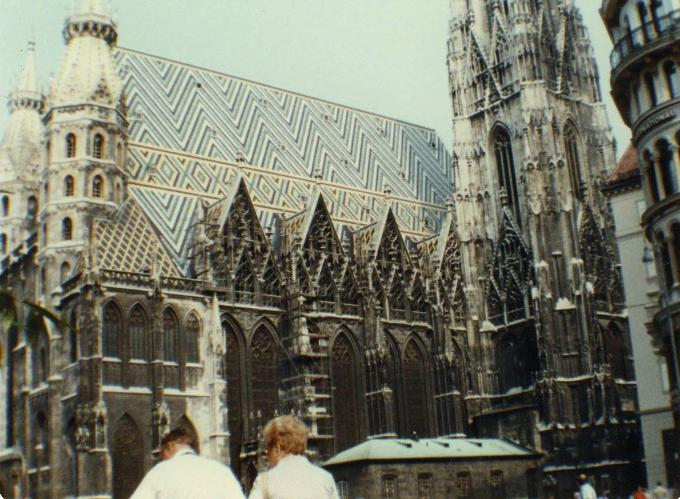

Inter Rail 1984 Day 4
Wednesday 5th September 1984
Had a wander around Strasbourg station. It seemed to be the place to doss overnight. Lots of EEC things abounded, including a map of the 10 members on the wall of the very nice looking but closed buffet.
Sat on the station for an hour and wrote up the first three days of this diary in my Luxembourg book rather than the original flimsy notebook. The Vienna train from Paris arrived at 1.26 am. It was absolutely jam packed full because there were only two 2nd class ordinary non couchette compartments. Jon and I ended up bedding down in the corridor.
Half an hour later we crossed from France into Germany. We were in the very last carriage so the customs men etc all got into the train at our end. The customs men were followed by the French border police followed by the German border police (3 in a group each time). All tramped their way passed us demanding passports and searching bags in the compartments. No-one asked us corridor dwellers for anything. 5 minutes later the ticket collector arrived to check tickets.
Finally settled down once and for all at 2.30am only to be woken up at 5.00am by somebody's bloody alarm clock. 6.30am meant arrival in Munich and off loading of thousands of people including a woman with a baby in a push chair. I had to get off and stand on German soil in order to let them all off. This at least meant there was space in a compartment so attempted to get a bit of shut-eye. One more bloody alarm clock at 7.30am and an Austrian passport checker (who actually looked at my passport) somewhere near Salzburg at 9.00 put an end to any thought of sleep.
The Austrian countryside around Salzburg is very Tyrolean. There were loads of nice looking mountains away in the distance. Hoping for a bit more sunshine today. The weather so far looks a little more promising than Luxembourg, Thank God!!
Arrived in Vienna at 12.00am with the sun shining nicely. I changed £20 into Austrian Schillings. Bought a map (AS27) and photos (£2) for my Hungarian visa at the station. Made our way towards the Youth Hostel which was abut 15 minutes away. Met an Australian lass who was heading in the same direction.
Booked into the hostel for one night. 160AS for bed, breakfast and evening meal (£4.70 approximately). A very new and modern YHA. 5 people to a room with en-suite shower and washbasin. Each person gets one lockable locker and one lockable wardrobe plus 2 sheets and pillowcases plus a duvet. Luxury.
Dumped bags, changed into shorts and headed into town. Vienna is a beautiful city. Peculiar, unusual buildings on each street corner. It is a strange mixture of old and new. St. Stephens Cathedral was very ornate outside but quite nice inside. Spent half an hour or so on a guided tour of the catacombs. Piles and piles of bones either in coffin remains or in amazingly neat stacks. Also loads of intestines of the Dukes of Hapsburg. The rest of them are buried in other chunks of Vienna. Decided against a trip up the incomplete spire i.e. the one knocked down by a bomb during WW2.
St. Peters Church on the other hand was overpowering. From the outside it looked nothing but inside everything that could be ornate was very ornate. Plus there appeared to be 2 dressed skeletons in 2 of the 7 altars. Very pretty but as a church it was just too, too ornate and over the top.
Passed the Spanish riding school and the rest of the Imperial Palace. One domed part of it now has a main road running through it. Also lots of pretty gardens. The weather was just nice.
Got back to the YHA, had a wash and had dinner. Cauliflower soup, Mexican meat balls with veg and mashed potatoes plus an apple and orange juice. Worked out our finances Felt so knackered went to bed after booking in for an additional night.
Notes
- There appear to be loads of Australians around here, all spending at least 3 months over here if not longer. Not too many Americans seen so far.